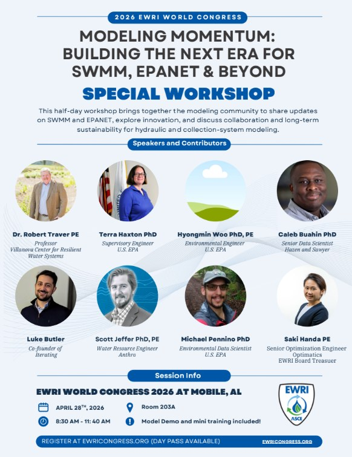
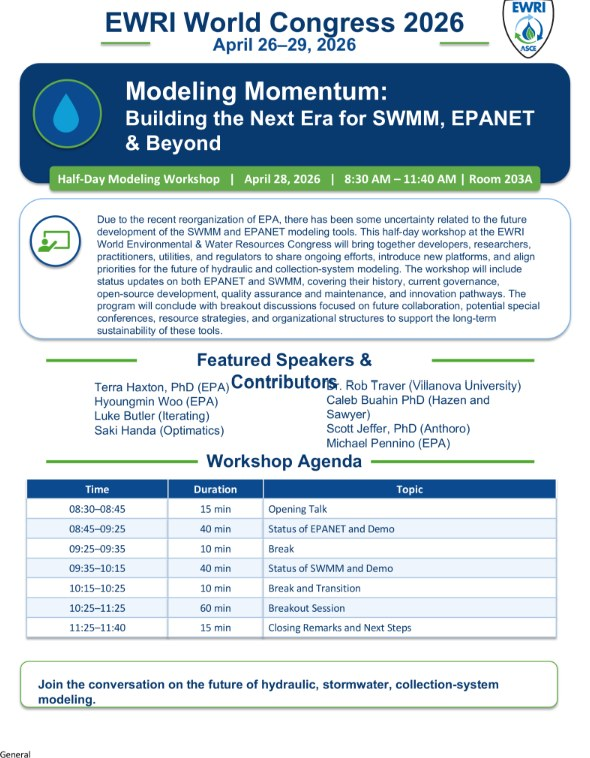

Summary
The main topic of the evening was the Open SWMM initiative and the future of SWMM development, including updates on SWMM6 and a recap of the half-day workshop on SWMM and EPANET that Saki Handa organized for the Congress.
The committee also welcomed Haseeb Payab of Drexel University to the leadership team as Technical Liaison, and heard a Modeler Minute on agentic modeling from Elango Thevar.
Highlights
The Open SWMM initiative and SWMM6
Members discussed the path forward for an open, community-developed SWMM following the reorganization at EPA. SWMM6 is being developed as an open-source successor to EPA SWMM under the HydroCouple initiative, which also defines open interfaces and data standards for linking water models. Learn more at hydrocouple.org.
Members were asked to bring ideas for new task committees, including refocusing existing efforts toward SWMM6.
Workshop: Modeling Momentum, Building the Next Era for SWMM, EPANET & Beyond
Earlier that day (8:30–11:40 AM, Room 203A), the committee’s half-day workshop brought together developers, researchers, practitioners, utilities and regulators. Sessions covered the status of EPANET and SWMM with live demos, current governance, open-source development, quality assurance and innovation pathways, followed by breakout discussions on future collaboration, special conferences, resources and long-term sustainability of these tools. The workshop was organized by Saki Handa.
- Robert Traver, Ph.D., P.E.Villanova University
- Terra Haxton, Ph.D.U.S. EPA
- Hyoungmin Woo, Ph.D., P.E.U.S. EPA
- Michael Pennino, Ph.D.U.S. EPA
- Caleb Buahin, Ph.D.Hazen and Sawyer
- Luke ButlerIterating
- Saki Handa, P.E.Optimatics · EWRI Board Treasurer
- Scott Jeffers, Ph.D., P.E.Anthropocene Engineering


Outreach
The committee is looking for additional content for its website and LinkedIn presence. Members with tutorials, case studies, data sources or news to share should contact the committee.
Agenda
- Call to order and roll call
- Committee officer update
- Haseeb Payab (Drexel University) joined the committee leadership as Technical Liaison.
- UWRRC and EWRI updates
- Task committee updates
- Teaching Tools
- Design Storm Standards
- Real-Time Systems
- SWMM Testing Protocol
- Call for new task committee ideas
- Refocusing toward SWMM6
- Other ideas from members
- Modeler Minute
- “Agentic Modeling” by Elango Thevar
- Seeking future presenters
- Model updates and related news
- HEC-RAS 7 (pipes version) / RAS 2025 beta
- SWMM6
- Opportunity Fund
- Outreach
- Committee website: seeking additional materials from members
- LinkedIn: seeking content
- Conference reports
- 59th ICWMM, Toronto (Feb 25–27)
- International LID Conference, Jacksonville, FL (Mar 1–4)
- World Environmental & Water Resources Congress, Mobile, AL (this week)
- Upcoming events
- 39th ICCE, Galveston, TX (May 17–22)
- Novatech, Lyon, France (Jun 29 – Jul 3)
- Watershed Management Conference, Reston, VA (Aug 9–12)
- ASCE2027 including the EWRI Congress, Philadelphia, PA (Mar 1–5, 2027)
- A modeling-specific conference in the Washington, DC area is being planned for next year
- Next meeting
- Online meeting at the end of September 2026
Detailed minutes were not captured for this meeting because of technical issues with the room’s hybrid setup. This page summarizes the agenda and main discussion topics. If you attended and can add notes or corrections, please email the secretary.